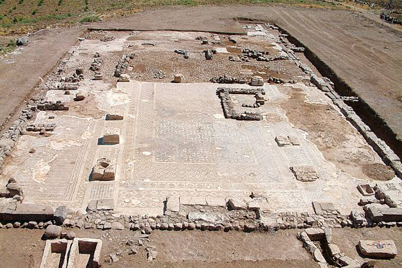
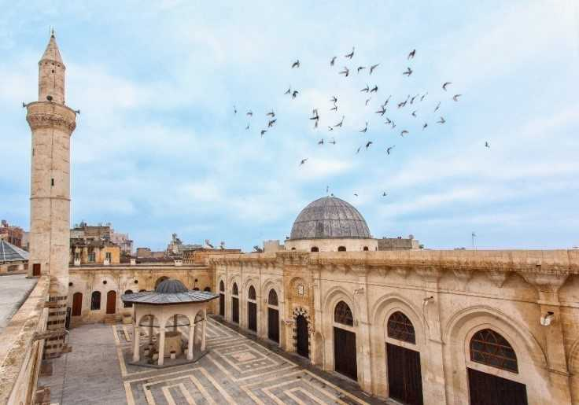
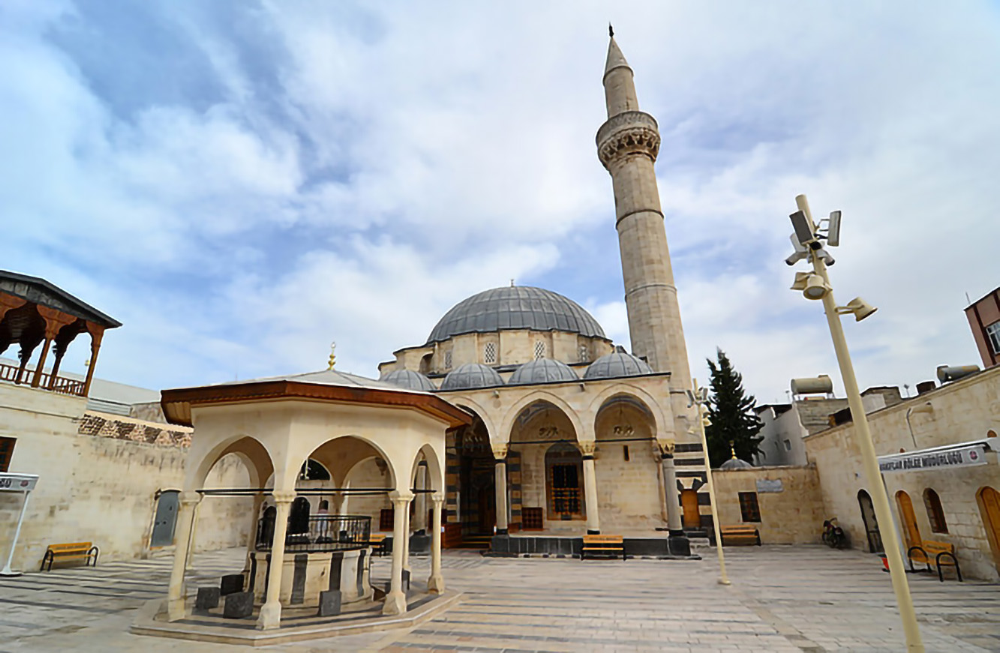
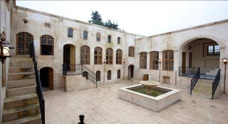
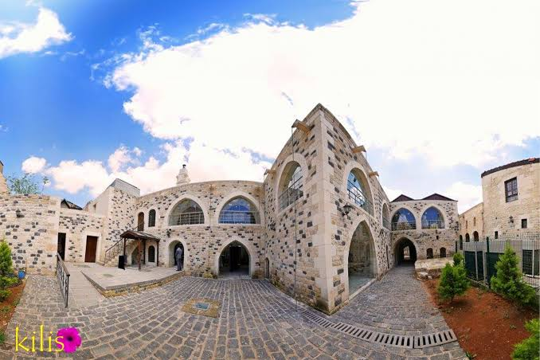
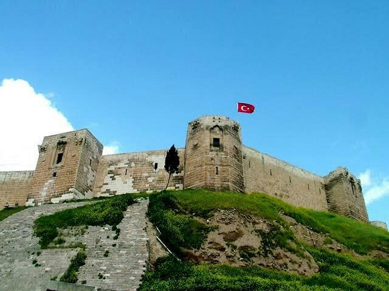

Tarihi yapıları, doğal güzellikleri ve eşsiz şehir atmosferiyle Kilis
Kilis, tarih boyunca birçok medeniyete ev sahipliği yapmış, tarihi yapıları ve kültürel mirasıyla dikkat çeken bir şehirdir. Şehirde geçmişten günümüze ulaşan camiler, konaklar, höyükler ve doğal güzellikler bulunmaktadır.

Kilis'in önemli arkeolojik alanlarından biridir. Yapılan kazılarda farklı dönemlere ait önemli arkeolojik buluntular ortaya çıkarılmıştır.

Kilis'in tarihi camilerinden biri olan Ulu Camii, şehrin tarihi dokusunu yansıtan önemli yapılardan biridir.

Osmanlı döneminden günümüze ulaşan önemli tarihi yapılardan biridir. Mimari özellikleriyle Kilis'in kültürel mirasının önemli parçalarındandır.

Geleneksel Kilis mimarisini yansıtan tarihi konaklar, taş işçiliği ve kendine özgü mimari özellikleriyle şehrin geçmişinden izler taşır.

Kilis ve çevresinin tarihini yansıtan arkeolojik eserlerin görülebileceği kültürel mekânlardan biridir.

Kilis'in önemli tarihi yapılarından biri olan Ravanda Kalesi, bölgenin geçmişine ışık tutan tarihi mekânlardan biridir. Doğal çevresi ve tarihi dokusuyla dikkat çeker.